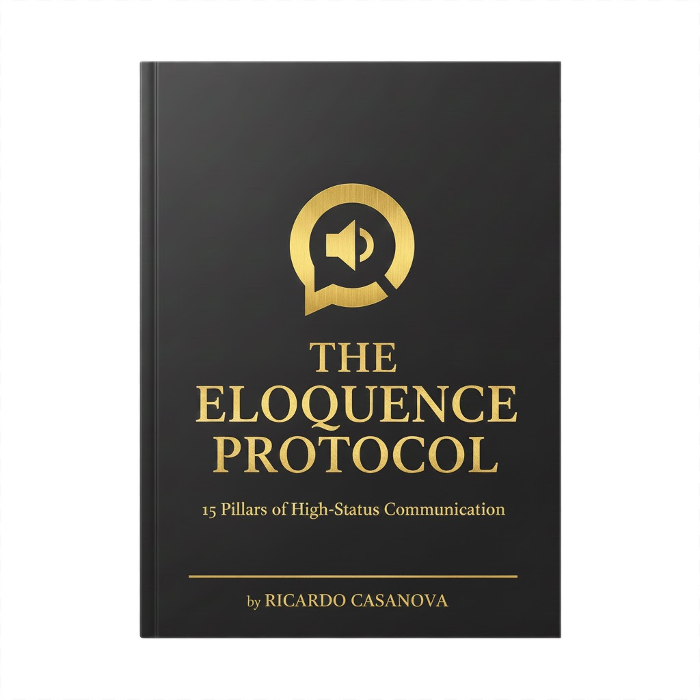

.jpg)
Stage / Speaking
Clear positions, real operating experience, and a point of view strong enough to create a conversation after the session ends.
KeynotesPanelsExecutive rooms

Ricardo Casanova / Toasty Media
Speaker, author, advisor, and technology operator. Ricardo works where executive communication, AI, emerging technology, and meaningful change meet.

.jpg)

Stage / Speaking / Advisory
Keynotes, executive sessions, panels, interviews, and advisory for leaders navigating AI, technology, trust, and change.
Stage presence
Clear positions, real operating experience, and a point of view strong enough to create a conversation after the session ends.

The Eloquence Protocol and authored work on high-status communication, AI adoption, trust, and leadership.
.jpg)
Executive advisory around AI adoption, emerging technology, commercial strategy, positioning, and complex stakeholder environments.
Thought leadership
Executive narrative that turns technical complexity into something leaders and markets can use.
Long-form work on AI, communication, trust, and leadership, including The Eloquence Protocol.
Interviews, AMAs, panels, and public-facing thinking with commercial weight.
AI will be confident and often misleading. Winners build systems people can trust.
Work with Ricardo